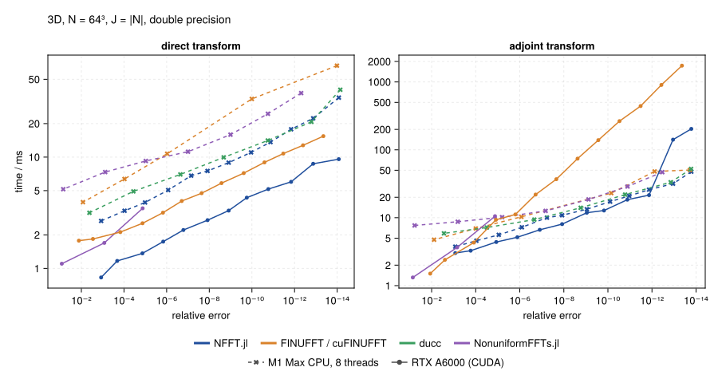
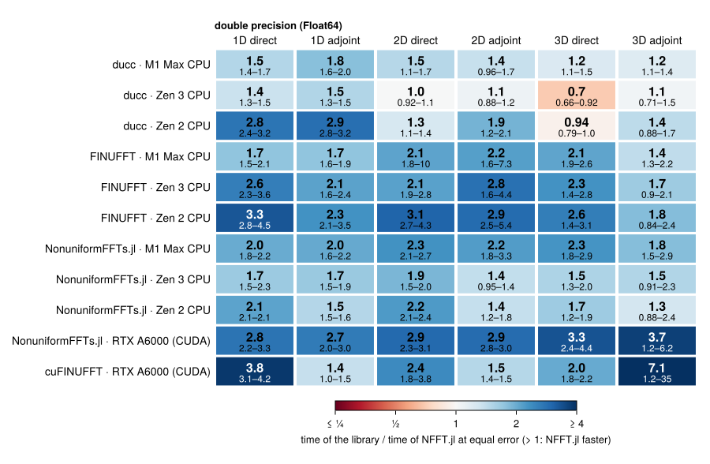
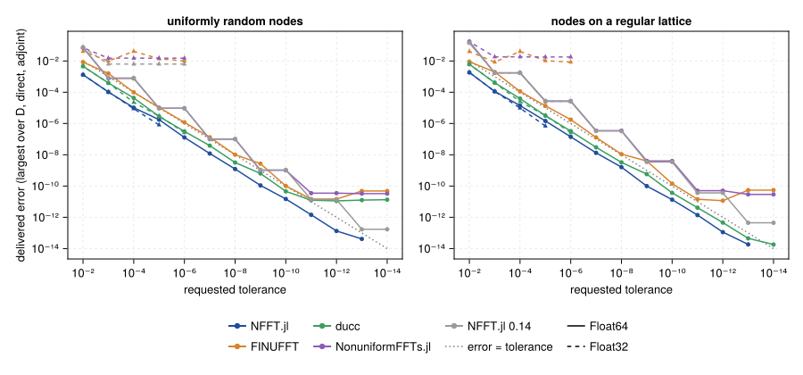
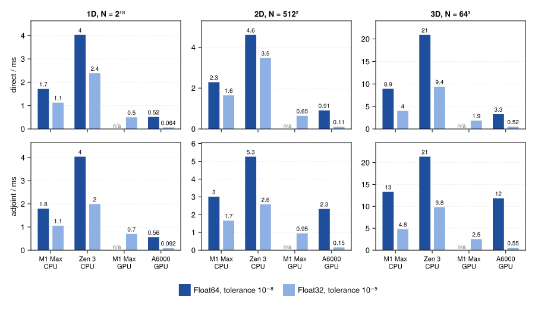

Performance
NFFT.jl is compared with FINUFFT, ducc and NonuniformFFTs.jl on CPUs, with cuFINUFFT and NonuniformFFTs.jl on an Nvidia GPU and with mlx-nufft on an Apple GPU. All numbers come from the benchmark suite in benchmark/ of the repository and can be reproduced with it (see Reproducing). This page shows four figures; the CPU suites (node density, problem size, threads, batches, real data, NNFFT), single precision, the GPU comparisons in detail and all measurements are on the page Benchmark details.
| Platform | Machine | Other libraries | Data |
|---|---|---|---|
| M1 Max CPU | Apple M1 Max, 8 threads (performance cores), Julia 1.13.2 | FINUFFT and ducc built from their main branches with native CPU flags, NonuniformFFTs.jl | 2026-10-31, run lite |
| M1 Max GPU | the same machine, Metal.jl 1.12 | mlx-nufft 0.3.3 (Python, MLX) | 2026-10-29, run metal |
| Zen 3 CPU | AMD EPYC 7763 (Zen 3, AVX2), 8 threads, Julia 1.13.3 | FINUFFT 2.5.1 (release binary), ducc0 0.42 built with -march=native, NonuniformFFTs.jl 0.9.8 | 2026-10-31, run lite, provisional |
| A6000 GPU | Nvidia RTX A6000 (Ampere) in the same machine, CUDA.jl 6.5 | cuFINUFFT 2.5.1 (Python, CuPy 14.2), NonuniformFFTs.jl 0.9.8 | 2026-10-31, run cuda, provisional |
Unless stated otherwise $J = |\bm{N}|$ uniformly random nodes, $\bm{N} = 2^{18}$, $512^2$, $64^3$. How the times and errors are measured is described below.
Time against error
3D, $\bm{N} = 64^3$, double precision: time against measured error of each library on the M1 Max CPU (dashed, crosses) and on the A6000 GPU (solid, circles); for each library the fastest time for each error it reaches. The Zen 3 CPU is left out of this figure for readability; its curves are on the Benchmark details page.

On the M1 Max CPU ducc needs 1.1–1.2× the time of NFFT.jl in 3D (medians, overview below), FINUFFT and NonuniformFFTs.jl 1.1–3.0×. On the A6000 cuFINUFFT's adjoint grows from 1.5 ms at an error of $1.2 \cdot 10^{-2}$ to 1.7 s at $4.4 \cdot 10^{-14}$; NFFT.jl's from 3.0 ms at $8.4 \cdot 10^{-4}$ to 203 ms at $1.6 \cdot 10^{-14}$, with a step from 22 to 141 ms between $1.4 \cdot 10^{-12}$ and $1.1 \cdot 10^{-13}$ (window width 12 to 13). NonuniformFFTs.jl on CUDA reaches no error below $1.3 \cdot 10^{-5}$.
Overview

Each cell is the time of the other library divided by the time NFFT.jl needs for the same measured error (NFFT.jl's time interpolated between its own measurements at neighbouring tolerances), as the median over the tolerance sweep $10^{-2}$ to $10^{-14}$ in double precision for one library, platform, dimension and transform; the small numbers are the smallest and the largest ratio. Blue: NFFT.jl faster; red: the other library faster.
On both CPUs NFFT.jl is faster than FINUFFT (medians 1.4–2.8) and NonuniformFFTs.jl (1.4–1.9). ducc is the closest competitor: medians 1.0–2.2 on the M1 Max; on Zen 3 1.4–1.5 in 1D, 1.0–1.1 in 2D and 0.70 in the 3D direct transform (range 0.66–0.92). On the A6000 cuFINUFFT is ahead in the 2D adjoint (0.87, range 0.51–1.1) and behind elsewhere, in the 3D adjoint by up to 22×. The same overview in single precision, with mlx-nufft on the M1 Max GPU, is on the Benchmark details page.
Delivered error
A tolerance is only comparable if it is kept. The suite contract measures the error each library delivers for the tolerance it was given, over the sweep above, in double and single precision, for uniformly random nodes and for nodes on a regular lattice, where the aliasing errors of the window add up coherently (M1 Max CPU, 2026-10-31).

Each point is the largest error over the dimensions and over the direct and the adjoint transform; dotted: error equal to the tolerance. NFFT.jl promises an error of at most reltol for any nodes, or an ArgumentError if no parameters reach it (see Accuracy and Parameters); it never exceeded the tolerance, for either node distribution, and rejected the tolerances below its rounding floor (missing points). Each of the other libraries exceeded its tolerance in some cases: ducc in a few, FINUFFT in about half, NonuniformFFTs.jl and NFFT.jl 0.14 in most, and these two in every case with lattice nodes. The single-precision errors of FINUFFT and NonuniformFFTs.jl around $10^{-2}$ are those of the 1D transform with $N = 2^{18}$ and include the rounding of the nodes described below.
The same code on four devices
NFFT.jl's time for the standard cases on each device: double precision at a tolerance of $10^{-8}$, single precision at $10^{-5}$; CPUs with 8 threads. The M1 Max GPU has no double precision. Zen 3 and A6000 provisional.

In single precision the A6000 needs 0.064–0.55 ms, 8–18× less than the M1 Max CPU; the M1 Max GPU needs 0.5–2.5 ms, 1.5–2.6× less than its CPU. In double precision the A6000 is 1.3–3.3× faster than the M1 Max CPU in 1D, 2D and the 3D direct transform, and about as fast in the 3D adjoint (12 against 13 ms). The Zen 3 CPU needs 1.5–2.4× the time of the M1 Max CPU.
How the benchmarks measure
- Equal measured error. The libraries interpret their tolerance parameters differently, so they are compared at equal measured error: the relative $\ell^2$ error against the exact NDFT on 64 sampled outputs. Each library sweeps its tolerance; a speed ratio interpolates NFFT.jl's time (log–log, between its neighbouring tolerances) at the error the other library delivers.
- Pareto rule. Only the fastest time for each error a library reaches counts, over all its tolerances; errors within 15 % of each other count as equal, and the faster point stays.
- What is timed. The execution of a precomputed plan: the minimum over repeated calls into preallocated outputs, on GPUs with a synchronisation after every call. Planning and the setup of the nodes are not timed. Benchmarks that include the setup of the nodes in every call measure a different use case, one where the nodes change between transforms.
- Options of the other libraries. Each library runs in its own process with its default options apart from the tolerance and the number of threads; FFTW plans use
ESTIMATE; cuFINUFFT chooses its own method and sorts the nodes. NonuniformFFTs.jl has no tolerance parameter. Its half support $m$ is set from the tolerance $\varepsilon$ by the rule of NFFT.jl 0.14, $m = \lfloor (\lceil \log_{10}(1/\varepsilon) \rceil + 1)/2 \rfloor$, with its default oversampling $σ = 2$. This mapping is ours, not a rule of NonuniformFFTs.jl; a sweep over $σ$ and $m$ is pending. - Provisional data. The Zen 3 and A6000 numbers come from one lite run (one size per dimension, two rounds) on a shared machine with other jobs running (load ≈ 35–45 on 256 hardware threads), where single timings can be off by tens of percent. The CUDA code of NFFT.jl has changed since.
- Single precision. The CPU adapters of FINUFFT and NonuniformFFTs.jl pass the nodes as $2\pi \bm{k}_j$ rounded to single precision, while the error is measured against $\bm{k}_j$; their single-precision errors include this rounding (to be fixed in the benchmark). ducc and NFFT.jl receive $\bm{k}_j$ itself. cuFINUFFT was measured against the rounded nodes it receives.
Everything else, including the explorer with all measurements and the commands to reproduce them, is on the page Benchmark details.